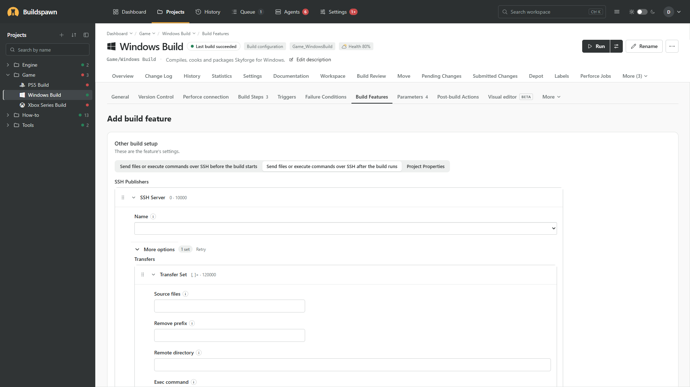

Send files or run commands over SSH after the build
Copies files to a server, or runs commands on it, when the build steps have finished.
When to use it
Use it to stop or restart something at the end of a build, or to move files that the build left in the workspace. The form is the same as before the build. It runs after the build steps but before the post-build actions.

How to set it up
- Open the build configuration, click Settings, then Build Features. Click Add build feature and choose Send files or execute commands over SSH after the build runs.
- Choose the server and add transfer sets, as on the before-the-build page.
- Click Save.
Every field
| Field | What it does | Default | Example |
|---|---|---|---|
| Name | The SSH server, chosen from the servers set up in the global settings. | None | build-share-01 |
| Source files | Files to send, as a comma separated Ant pattern. The base folder is the workspace. | Empty | Tools/** |
| Remove prefix | The first part of the path that is not created on the server. | Empty | Tools |
| Remote directory | A folder below the one set in the global settings. It is created if it does not exist. | Empty | skyforge/tools |
| Exec command | A command to run on the server after the files are sent. | Empty | sudo systemctl stop skyforge-cache |
A worked example
After the Linux Server Build, a transfer set starts the cache service again with sudo systemctl start skyforge-cache.
What you see when it runs
The log shows the SSH connection and the commands after your last build step.
Problems and fixes
| Problem | What to do |
|---|---|
| It runs even when the build failed | Wrappers run around the build. Use the post-build action if you only want to send files of a good build. |
| The command needs a terminal | Tick Exec in pty in Advanced. |